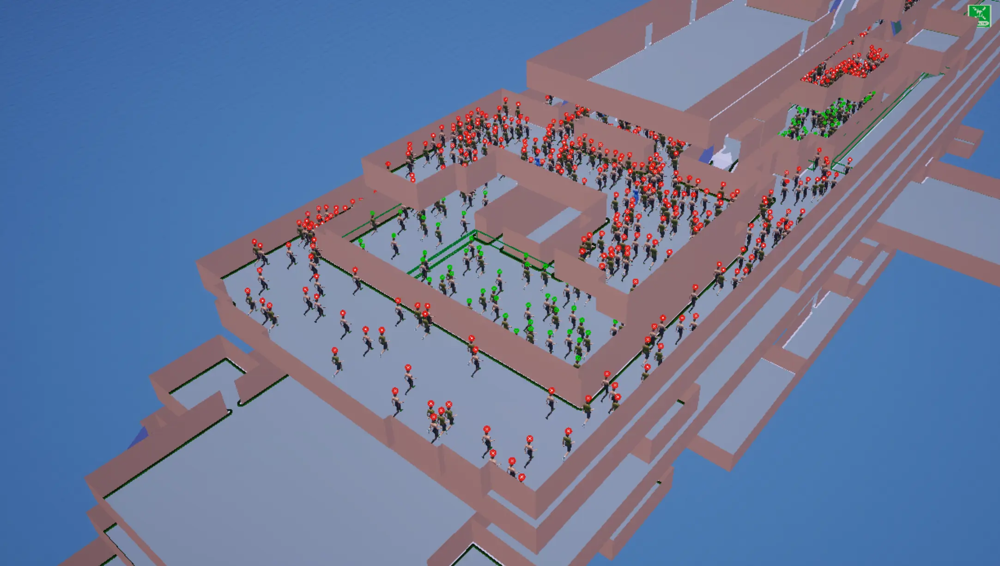
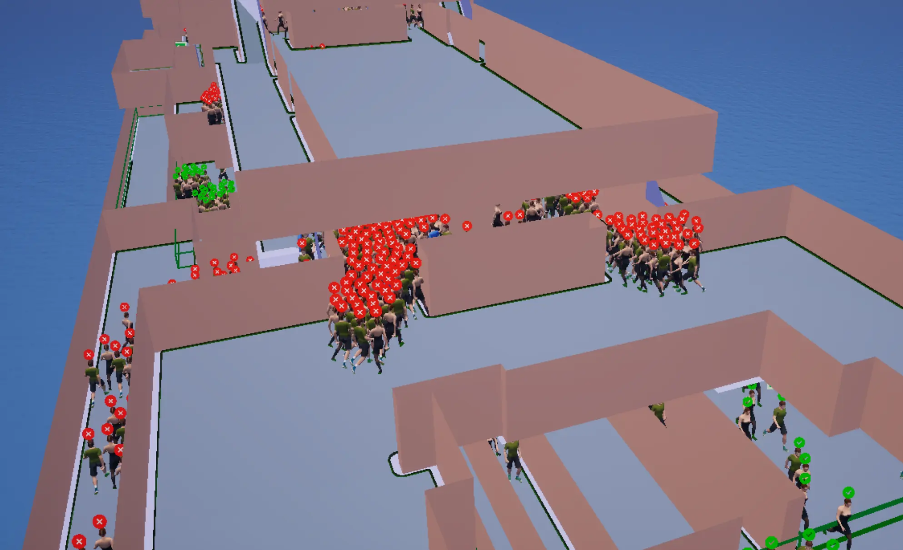
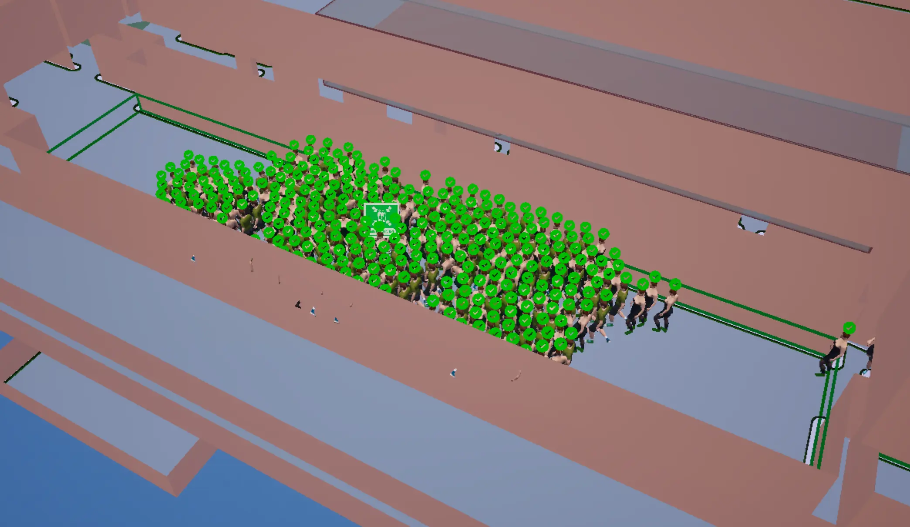
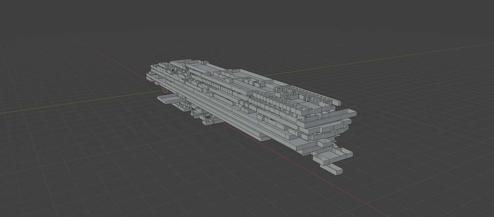

Ship Evacuation Simulator
Showcase Video
Project Details
How It Was Built
The Ship Evacuation Simulator was developed in Unreal Engine 5 using a hybrid architecture that combines Blueprint-driven system orchestration with performance-critical systems implemented in C++.
Vessel geometry is modeled externally and imported into UE5, where a Navigation Mesh (NavMesh) is generated to define all valid walkable areas. Passenger agents compute routes to their assigned muster stations using graph-based pathfinding algorithms (A* and Dijkstra) operating directly on the NavMesh.
To produce realistic pedestrian dynamics, the system integrates Unreal Engine’s built-in Reciprocal Velocity Obstacles (RVO) implementation together with the Detour Crowd Manager. This hybrid approach enables continuous-space movement, smooth local avoidance, and stable behaviour under dense crowd conditions such as staircases and narrow corridors.
Each agent is initialized according to demographic distributions defined by the MSC.1/Circ.1533 – Revised Guidelines on Evacuation Analysis for Passenger Ships issued by the International Maritime Organization. Movement attributes include walking speed on flat terrain, stair ascent/descent modifiers, acceleration ramp-up profiles, awareness delay, and personal space radius constraints.
All twelve IMO benchmark scenarios were implemented directly inside the simulator as reusable validation modules. These include corridor walking speed tests, staircase flow, exit flow rates, counterflow, density–flow relationships, and demographic parameter verification. Multiple stochastic runs can be executed in batch mode, with aggregated statistical outputs (average, range, 95th percentile).
Why
Passenger vessel evacuation presents complex challenges due to multi-deck layouts, vertical circulation bottlenecks, and high occupancy densities. Many traditional evacuation tools operate under static assumptions with limited visualization capabilities.
This project was developed to create a regulatory-aligned evacuation platform inside a modern real-time engine, combining validated pedestrian modelling with high-fidelity visualization. The goal is to bridge the gap between compliance-focused simulation and dynamic, visually interpretable evacuation analysis.
Long-term development includes hazard-aware routing (fire, smoke, flooding), vessel heel and trim simulation, adaptive path recalculation under blocked exits, and integration with live data sources for real-time evacuation management.
Built With
• Unreal Engine 5 (Blueprints + C++)
• RVO (Reciprocal Velocity Obstacles)
• Detour Crowd Manager
• Blender 4.1 (vessel geometry modelling)
Screenshots



